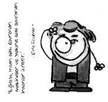

Eric Fromm (1900-1980)
“Where are you from: Eric Fromm” şeklinde bir espriyle konuya girmek sanırım herkesi ondan soğutur. O yüzden tarafsızca anlatalım. Amerikalı psikanalist, sosyolog, psikolojide hümanist holistik yaklaşımın öncülerinden. Dindar Yahudi bir ailenin çocuğu.
Yine bir psikolog olan Karen Horney’le bir dönem ilişki yaşamıştır.

Biyofili hipotezine olan katkıları, evrimsel psikoloji konusundaki araştırmalara temel sağlamıştır. Biyofili hipotezi insanın doğaya ve doğal çeşitliliğe karşı doğuştanmış gibi gözüken sevgisidir. Biyofili hipotezi sayesinde yaşamsal süreçlere saygı ve sevgimiz artar. Fromm bunu “canlı ve yaşamsal olan şeyler tarafından cezp edilme yolundaki psikolojik saplantı” olarak tanımlar.
Freud ve Marx’ın görüşlerini kıyaslayarak bir sentez yapmaya çalışmıştır. Freud’un bireye uyguladığı psikanalizi Fromm topluma uygulamış ve toplum biçimleriyle kişilik yapıları arasındaki ilişkileri incelemiştir. Özgürlüğü, özgür iradeyi, üretkenliği ve sevgiyi öne çıkarmaya çalışmıştır. Fromm insanın doğadan ve diğer insanlardan koptuğu için yalnızlık çektiğini savunur. Tarih ilerledikçe insanın özgürlük kazandığını, buna karşın yalnız kaldığını söyler. Fromm’a göre sevgi ve nefret birbirine karşıt dürtüler değildir. Atılacak ilk adım, sevmenin de yaşamak gibi bir sanat olduğunu kabul etmektir.
Bir sosyalist olan Fromm birçok ülkede konferanslar vermiştir. Aynı zamanda kitapları birçok dile çevrilmiş bir yazardır.
Ne demiş Eric Fromm...
• İnanıyorum ki, insan hayatındaki en temel sorun, yaşam sevgisi ve ölüm sevgisi arasındaki karşıtlıktır.
• “Sosyoloji sadece toplumu ele alır, psikoloji ise, sadece bireyi ele alır.” tezi yanlıştır. Çünkü psikoloji toplumsallaşmış bireyi ele alır, sosyoloji de ruhsal yapısı ve mekanizmalarıyla dikkate alınması gereken bir grup bireyi.
• Hiç bir şey üreticiliği aşk kadar teşvik etmez, tabi aşkın gerçek olması koşuluyla.
• Geçmişin tehlikesi esir olmaktı, geleceğinki ise robot.
• Çocuğun irrasyonel otoriteye karşı kaybettiği savaştan kalan yara izleri, her nevrozun tabanında bulunur.
• Makineler yüzünden zaman insanın hükümdarı oldu.